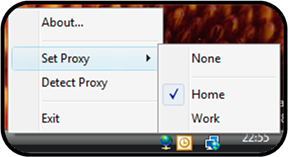

Proxy Monitor is a small application that monitors the network and auto-detects the internet proxy server to use.
Before this application can be used, the .NET Framework Version 2.0 must be installed. It is available for free at Microsoft's download page for the .NET Framework.
The application can be installed by just copying it to a destination directory of your choice. Uninstalling is just a matter of deleting the files again – there are no registry settings or other external items that are modified by the application.
The application can be started as a regular application, which will make it run as an icon in the system notification area. When started, it will auto-detect the proxy server to use. It will also automatically re-detect the proxy server when the computer’s network address has changed.
You can right-click the icon to manually set the proxy server or to trigger an auto-detection.

The application can also be run from the command-line with the /detect flag to auto-detect the proxy and exit immediately (e.g. when the computer starts up).
The application must be configured to include the definitions of the known proxy
servers. This involves changing the ProxyMonitor.exe.config file in a text editor
to list all known proxy servers in the <proxyServers> element.
Each proxy server must be represented as a <proxyServer> element
with the following attributes:
name: the friendly name of the proxy server. This will show up in the
context menu of the application icon in the notification area.host: the IP-address or host name of the proxy server.port: the TCP port to use on the proxy server (defaults to port 80).bypassForLocalAddresses: set to true to bypass the proxy server for
local addresses, or false to always use the proxy server (defaults to true).bypassList: set to true to bypass the proxy server for local addresses,
or false to always use the proxy server (defaults to true).autoConfigUrl: set this to the url of an automatic proxy configuration
script, if available.command: the command (DOS command, batch file, ...) to execute if this
proxy is used.skipAutoDetect: skips auto-detection of this proxy server, so that
it only can be set manually through the context menu.Only the name and either the host or autoConfigUrl
attributes are mandatory.
Each proxy server is in checked to see if it is available by attempting to download
the autoConfigUrl or by sending a ping command to the host.
When the download succeeded or a reply is received, the proxy server will be used
and optionally the command is executed. If needed, the ping timeout
value can be modified in the pingTimeout attribute of the <proxyConfiguration>
element (the default is 1000 milliseconds).
It is also possible to disable all proxy change notifications (balloon tips) by setting
the disableNotifications attribute of the <proxyConfiguration>
element to true (the default is false).
A sample configuration file looks as follows:
<?xml version="1.0" encoding="utf-8" ?>
<configuration>
<configSections>
<section name="proxyConfiguration"
type="JelleDruyts.ProxyMonitor.Configuration.ProxyConfiguration, ProxyMonitor"/>
</configSections>
<proxyConfiguration pingTimeout="1000" disableNotifications="false">
<proxyServers>
<proxyServer name="Home"
host="homeproxy"
port="8080"
bypassForLocalAddresses="false"
skipAutoDetect="false" />
<proxyServer name="Work"
autoConfigUrl="http://workproxy/autoconfig.pac"
bypassForLocalAddresses="true"
bypassList="server1;server2"
command="ConnectToShares.bat"
skipAutoDetect="false" />
</proxyServers>
</proxyConfiguration>
</configuration>
skipAutoDetect attribute to support proxies that are only
set manually.bypassList attribute to support the proxy bypass list.disableNotifications attribute to allow disabling notifications
(balloon tips).host, the autoConfigUrl attribute
of the proxyServer element is now used to determine if the proxy server
is reachable by attempting a download of the configuration script.host attribute of the proxyServer element
is now optional.© 2006-2008, Jelle Druyts
This software is licensed as freeware.
Copyright (c) 2006-2008, Jelle Druyts (http://jelle.druyts.net/)
All rights reserved.
Redistribution and use in source and binary forms, with or without modification, are permitted
provided that the following conditions are met:
(1) Redistributions of source code must retain the above copyright notice, this list of
conditions and the following disclaimer.
(2) Redistributions in binary form must reproduce the above copyright notice, this list of
conditions and the following disclaimer in the documentation and/or other materials
provided with the distribution.
(3) The name of Jelle Druyts may not be used to endorse or promote products derived from
this software without specific prior written permission.
THIS SOFTWARE IS PROVIDED BY THE COPYRIGHT HOLDERS AND CONTRIBUTORS "AS IS" AND ANY EXPRESS
OR IMPLIED WARRANTIES, INCLUDING, BUT NOT LIMITED TO, THE IMPLIED WARRANTIES OF MERCHANTABILITY
AND FITNESS FOR A PARTICULAR PURPOSE ARE DISCLAIMED. IN NO EVENT SHALL THE COPYRIGHT OWNER OR
CONTRIBUTORS BE LIABLE FOR ANY DIRECT, INDIRECT, INCIDENTAL, SPECIAL, EXEMPLARY, OR CONSEQUENTIAL
DAMAGES (INCLUDING, BUT NOT LIMITED TO, PROCUREMENT OF SUBSTITUTE GOODS OR SERVICES; LOSS OF USE,
DATA, OR PROFITS; OR BUSINESS INTERRUPTION) HOWEVER CAUSED AND ON ANY THEORY OF LIABILITY, WHETHER
IN CONTRACT, STRICT LIABILITY, OR TORT (INCLUDING NEGLIGENCE OR OTHERWISE) ARISING IN ANY WAY OUT
OF THE USE OF THIS SOFTWARE, EVEN IF ADVISED OF THE POSSIBILITY OF SUCH DAMAGE.